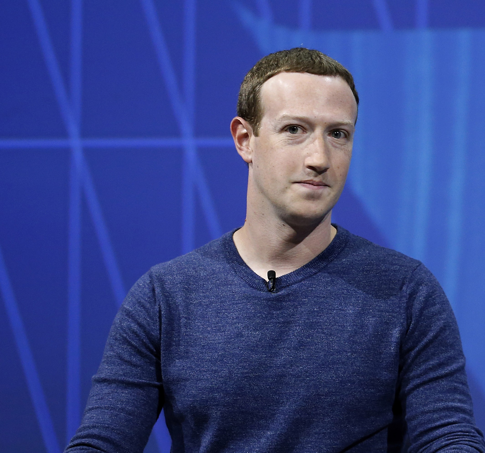

O empresário escolhido foi Mark Zuckerberg!
Criador da empresa Facebook
Fatores que o motivaram:
Conexão dos usuários
Um dos principais fatores para a criação do Facebook foi a necessidade de mudar o mundo, Zuckerberg deixa claro que a maioria dos fundadores de empresas tem o objetivo de mudar o mundo, dito isso, seu plano era criar um meio de conectar as pessoas e facilitar a comunicação e isso só foi posssível pelo valores da empresa: Liberdade de compartilhamento de informações e de conexão, respeito à privacidade dos usuários, liberdade e fluxo livre de informações, igualdade de fundamentos, responsabilidade e transparência.
“Eu sinto que as melhores empresas começaram não porque seus fundadores queriam ter uma empresa, mas porque os fundadores queriam mudar o mundo. Se você decide que quer só fundar uma empresa, você começa a desenvolver sua primeira ideia. E contrata um monte de funcionários.” - Mark Zuckerberg
Qual tipo de empreendedor ele se considera?
Considerando os tipos de empreendores: empreendedor público, empreendedor corporativo, empreendedor cooperado, empreendedor inesperado, empreendedor informal, empreendedor do conhecimento, empreendedor normal, empreendedor serial, empreendedor herdeiro, empreendedor interno, empreendedor individual, empreendedor franqueado, empreendedor social, empreendedor digital. Mark Zuckerberg se encaixa nesses perfis de empreendores: empreendedor cooperado, empreendedor inesperado, empreendedor do conhecimento, empreendedor normal, empreendedor social, empreendedor digital.
Ele elaborou um Plano de negócios?
No começo da sua carreira como empresário, ele não tinha planejado um modelo de negócios padronizado, ele tinha seus objetivos, metas, valores para a sua empresa, mas nada materializado apenas teórico, porém com o passar do tempo e crescimento da sua empresa.
BMG canvas
Como tudo aconteceu?
O ínicio da trajetória de Mark Zuckerberg se deu quando ele foi convidado por alunos de Havard para ajudar no desenvolvimento de um site chamado Havard Connection, que tinha como principal objetivo promover namoros entre alunos da universidade, porém antes de colocar o site no ar, ele lançou o seu site com seus amigos da faculdade chamado "The Facebook", que deu ínicio a maior rede social de todos os tempos, dito isso, ele foi acusado de plagiar a ideia do site Havard Connection.
Primeiro layout do Facebook.
Apresente a empresa do seu pesquisado:
Essa é a empresa detentoras das maiores rede socias de todos os tempos, tendo o maior número de usuários no mundo.

Essa foi a maior rede social, de comunicação, compartilhamento de informações, de marketplace, de influencer, etc.
Essa é uma das maiores redes sociais de engajamento, publicações de fotos pessoais, de venda digital, de trabalho com internet, etc.
Essa é a maior rede social de comunicação, usada para negócios, para o pessoal, aqui é onde você se conecta com pessoas conhecidas.